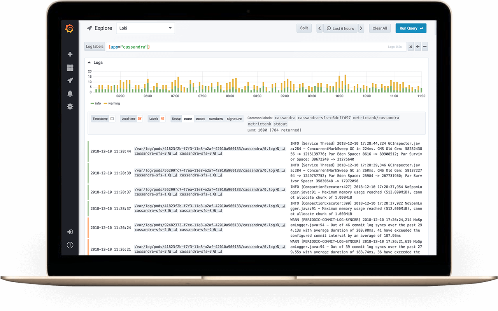

Loki - Kubernetes 로깅
Loki는 Prometheus에 영감을 받아서 탄생한 클라우드 네이티브 인프라를 위한 로깅 서비스입니다.
Loki는 무엇인가?
KubeCon Seattle 2018에서 Grafana Labs에서 오픈소스로 공개된 Loki는 Kubernetes에서 Prometheus에 대한 경험이 있는 사용자에게 최적화된 로깅 백엔드입니다. Loki는 뛰어난 로그 검색 및 시각화 기능을 Grafana 6.0에서 제공합니다.
Grafana Loki는 완전한 기능을 갖춘 로깅 스택으로 구성되어져 있습니다.
Loki는 단일 로그 라인을 그대로 처리한다는 아이디어를 기반으로 만들어졌습니다. 이는 전체 텍스트 인덱싱을 하는 것이 아니라 Prometheus와 마찬가지로 동일한 label을 사용하여 관련 로그들을 그룹화한다는 것을 의미합니다. 이 방식은 훨씬 효율적이며 확장성이 좋습니다.
구성요소
- Loki: 메인 서버 구성요소를 Loki라고 부르며 전달되는 로그들을 영구 저장하고 클라이언트의 LogQL 쿼리를 실행합니다. Loki는 확장성이 뛰어난 Prometheus 백엔드인 Cortext와 높은 수준의 아키텍처를 공유합니다.
- Promtail: 로그를 중앙 저장소로 전달하려면 에이전트가 필요합니다. Promtail은 모니터링해야 하는 모든 노드에 배포되어 로그를 Loki로 전달합니다. 또한 Promtail은 쉽게 쿼리할 수 있도록 label을 첨부하는 등의 로그 라인들을 사전 처리하는 중요한 작업도 수행합니다.
- Grafana: Grafana 6.0 이상에서 사용할 수 있는 Explore 기능은 사용자와 Loki 사이의 중요한 접점입니다. Explore는 로그를 발견하고 분석하는데 사용됩니다.

Helm Chart를 사용하여 Loki와 Promtail을 Kubernetes에 배포
Kubernetes 클러스터에 Helm이 설치되었는지 확인한 다음 Loki의 chart 레포지토리를 Helm에 추가합니다.
helm repo add loki https://grafana.github.io/loki/charts
다음 명령어를 실행하여 chart 레포지토리를 업데이트할 수 있습니다.
helm repo update
loki-stack namespace에 배포합니다.
helm upgrade --install loki --namespace=loki-stack loki/loki-stack
설치를 검증합니다.
kubectl --namespace=loki-stack get services
kubectl --namespace=loki-stack get pods
Grafana에 Loki를 Data Source로 추가
Grafana는 6.0 이상 버전에서 Loki를 기본적으로 지원하지만 6.3 이상을 사용하는 것이 좋습니다.
- Grafana에 로그인합니다.
- 좌측 사이드바의 톱니 아이콘을 통해
Configuration>Data Sources로 갑니다. + Add data source버튼을 클릭합니다.- 리스트에서 Loki를 선택합니다.
- http URL 필드에는 Loki server의 주소를 작성해야 합니다. 예로 Kubernetes에 Loki를 배포했다면
http://loki.loki-stack:3100이 주소가 됩니다. - 로그를 보려면 사이드바에서 Explore를 클릭하고, Loki datasource를 선택한 다음 Log labels 버특을 사용하여 log stream을 선택합니다.
쿼리
분석을 위해 Loki에서 이전에 수집한 로그들을 다시 가져오려면, LogQL을 지원하는 클라이언트가 필요합니다. (예. Grafana)

LogQL
Loki는 LogQL 이라는 Loki server에서 로그를 쿼리하기 위한 고유한 언어를 가집니다. 선택 label을 가진 분산 grep 으로 생각할 수 있습니다.
로그 쿼리는 log stream selector와 filter expression 이렇게 두 부분으로 구성되어져 있습니다. 성능상의 이유로 인해 Prometheus 스타일의 log stream selector를 사용하여 로그 스트림 세트를 선택하는 것으로 시작해야 합니다.
log stream selector는 로그 스트림을 관리할 수 있는 수준으로 줄인 다음 정규 검색 표현식을 사용하여 분산된 grep을 수행합니다.
Log Stream Selector
쿼리 표현식의 label 부분을 중괄호 {}로 묶은 다음 key value 구문을 사용하여 label을 선택합니다. 다수의 label 표현식들은 쉼표로 구분합니다.
{app="mysql",name="mysql-backup"}
현재 다음 label 매칭 연산자들이 지원됩니다.
=정확히 동일함.!=동일하지 않음.=~정규표현식 매칭.!~정규표현식에 매칭되지 않음.
예제:
{name=~"mysql.+"}{name!~"mysql.+"}
Prometheus Label Selectors에 적용되는 규칙이 Loki Log Stream Selectors에 동일하게 적용됩니다.
Filter Expression
Log Stream Selector를 작성한 후 검색 표현식을 작성하여 결과값을 추가로 필터링할 수 있습니다. 검색 표현식은 단순 텍스트 또는 정규 표현식이 될 수 있습니다.
예제 쿼리:
{job="mysql"} |= "error"{name="kafka"} |~ "tsdb-ops.*io:2003"{instance=~"kafka-[23]",name="kafka"} != kafka.server:type=ReplicaManager
다음 예제처럼 필터 연산자들은 연결될 수 있으며, 표현식을 순차적으로 필터링합니다. 결과값으로 출력되는 로그 라인들은 모든 필터를 충족합니다.
{job="mysql"} |= "error" != "timeout"
다음과 같은 필터 유형이 구현되어져 있습니다.
|=문자열을 포함하는 라인.!=문자열을 포함하지 않는 라인.|~정규 표현식에 매칭되는 라인.!~정규 표현식에 매칭되지 않는 라인.
정규 표현식은 RE2 syntax를 수용합니다. 매칭은 기본적으로 대소 문자를 구분하며 (?i)를 정규 표현식 앞에 접두사로 사용하면 대소 문자를 구분하지 않도록 전환할 수 있습니다.